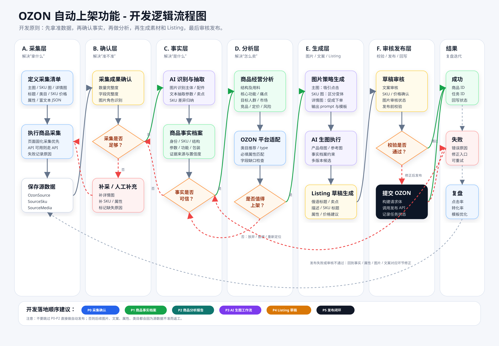

OZON 自动上架开发逻辑流程图
按开发顺序拆分：采集确认 → 商品事实 → 商品分析 → AI 生图 → Listing 草稿 → 审核发布。
打印 / 另存 PDF
打开 SVG 原图

P0 采集确认
先确认采集到了什么、缺什么、哪些需要人工补充。
P1 商品事实档案
把图片、文本、SKU 和人工确认合并成可信商品事实。
P2 商品分析报告
分析卖点、人群、市场、竞品、定价和上架价值。
P3-P4 生成内容
基于事实和分析生成图片方案、AI 图片、标题、详情和 Listing。
P5 发布闭环
草稿审核、发布前校验、提交 OZON，并把失败原因回流修正。